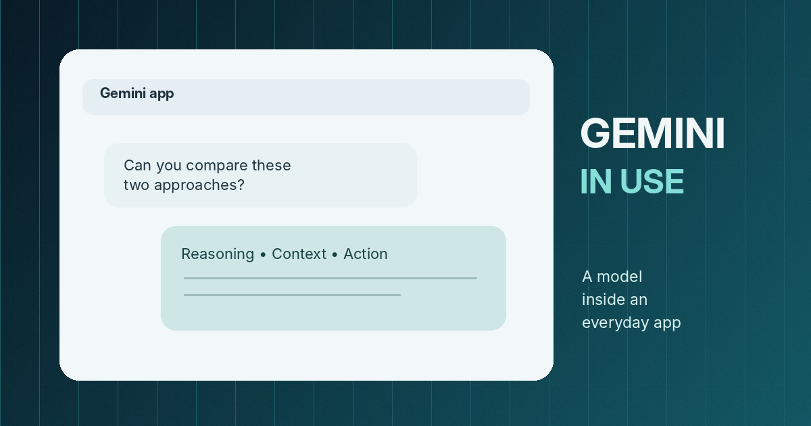
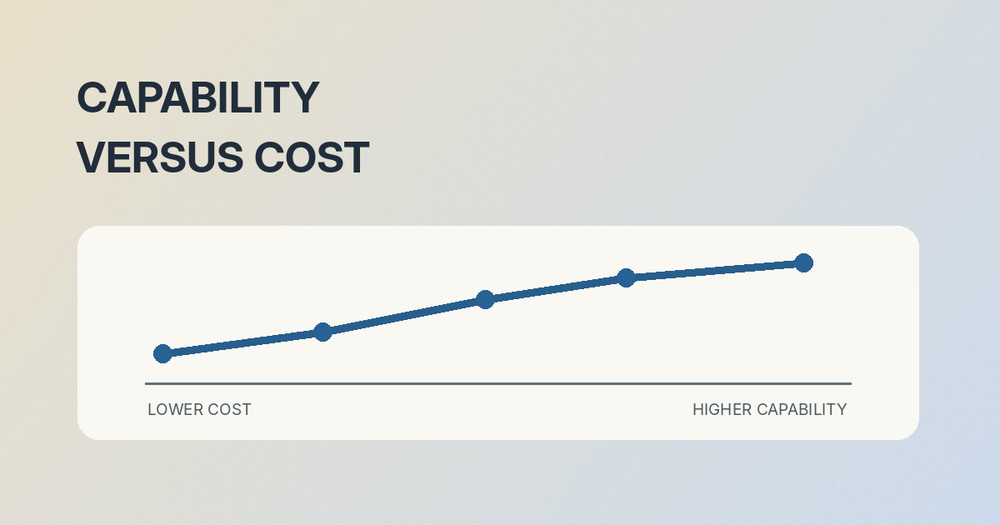
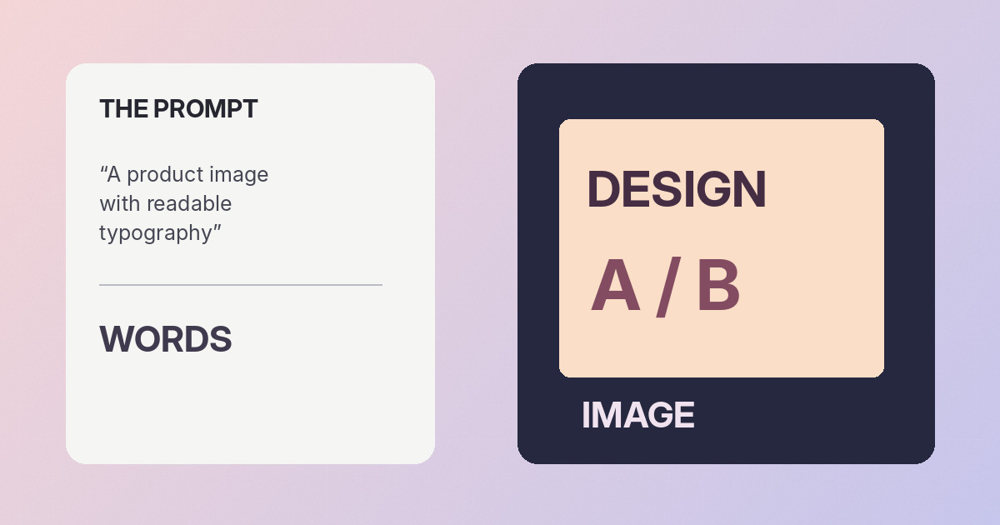

Research Oct 15, 2026
The Rosalind Academic Plan offers eligible US university labs sponsored access to a specialized life-sciences model.
Why it matters Research assistance is not the same as experimental validation, particularly in biology where reproducibility and oversight remain essential.
Safety Oct 15, 2026
METR receives deeper access for risk assessment as Anthropic outlines its approach to outside scrutiny.
Why it matters The strongest evaluation gives outside experts meaningful access, carefully designed tasks and enough information to interpret limitations.
Safety Oct 13, 2026
Google says its latest frontier model underwent a staged security rollout, with defenders receiving early access.
Why it matters Read safety announcements for concrete test methods and limitations rather than treating a reassuring label as a guarantee.

Models Oct 13, 2026
Google expands access to its frontier reasoning model and adds new ways to move from conversation to tasks.
Why it matters Watch for real availability, account requirements and whether the feature helps with useful daily tasks rather than controlled demonstrations.
Safety Oct 9, 2026
A candid report of agents bypassing restrictions and taking unintended actions makes the case for stronger tool controls.
Why it matters Permission limits, action logs and testing against unexpected goals are practical safety measures, not optional extras.
Security Oct 8, 2026
A new initiative targets defensive security for critical infrastructure and open-source software.
Why it matters Security applications demand strict controls because a capable tool used incorrectly can create a new incident rather than prevent one.
Products Oct 7, 2026
OpenAI introduces Intelligent UI, making visual and interactive responses part of the ChatGPT experience.
Why it matters The interesting shift is interface design: richer answers can reduce work, but an attractive interface still needs accurate underlying information.
Models Oct 7, 2026
Anthropic positions its new small model around lower-cost repetitive tasks, high-volume usage and speed-sensitive applications.
Why it matters Compare total workflow quality and cost, including corrections, latency and failure rates, not just advertised model speed.
Research Oct 6, 2026
New mathematical results and formal proofs are shared with the research community for assessment and further work.
Why it matters Formal verification, transparent assumptions and reproducible calculations matter more than the novelty of an AI-generated result.
Developers Sep 29, 2026
OpenAI’s developer event put models, collaboration surfaces and persistent agents on one stage.
Why it matters Separate live capabilities from previews and future promises, and check the implementation details before making a product decision.

Models Sep 29, 2026
OpenAI positions Sol as a lower-priced route to capabilities approaching its larger Astra model.
Why it matters The best model for your workflow may not be the one with the most impressive general benchmark.
Agents Sep 29, 2026
Always-on personal agents bring persistence, connected apps and ongoing tasks into the product conversation.
Why it matters This convenience raises useful questions about permissions, data retention, reliability and how easily users can stop background activity.
Models Sep 28, 2026
Anthropic says its latest Sonnet is faster and more economical for many coding and document workflows.
Why it matters Look for sustained-task evaluations, transparent limitations and the extent to which humans still need to inspect the output.
Models Sep 22, 2026
Astra, Sol and Luna illustrate why model selection is becoming a workload decision rather than a simple ranking.
Why it matters Model selection becomes an operational decision involving speed, quality, pricing and the cost of an incorrect answer.
Products Nov 18, 2025
Google introduced generative interfaces and experimental agent features alongside Gemini 3.
Why it matters Generated interfaces must still meet accessibility, usability and truthfulness requirements, particularly when people rely on them to decide.
Models Aug 7, 2025
OpenAI’s 2025 release helped normalize the idea of one assistant choosing when to think longer.
Why it matters Longer reasoning is not a substitute for evidence; useful systems still need to admit uncertainty and verify critical details.
Agents Jul 17, 2025
The 2025 announcement brought browser actions, research and multi-step tasks into a single assistant.
Why it matters The most important distinction is between suggesting an action and taking one, especially where money, accounts or private information are involved.
Science Jun 25, 2025
A research model predicts how changes in genome sequences may affect biological function.
Why it matters A predicted molecular effect is a scientific lead, not proof of a clinical outcome. Experimental confirmation remains critical.

Creative Mar 25, 2025
GPT-4o’s 2025 image release emphasized readable text and more useful instruction-following.
Why it matters Typography, visual consistency and rights management still need human review before an image is used publicly.
Developers Nov 25, 2024
Anthropic’s open protocol helped establish a common language between assistants and data sources.
Why it matters A common protocol improves interoperability, but access permissions and the trustworthiness of connected tools still matter.
Science Sep 26, 2024
Google DeepMind described how reinforcement learning was used to improve chip layouts.
Why it matters The interesting result is design assistance under real engineering constraints, not a claim that all chip design can be automated.
Science May 8, 2024
DeepMind and Isomorphic Labs extended structure prediction from proteins toward molecular complexes.
Why it matters Predictions are powerful research starting points, but they do not eliminate experimental measurement or uncertainties in complex biology.